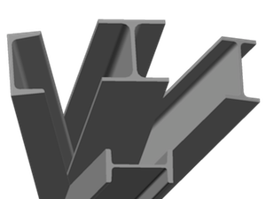
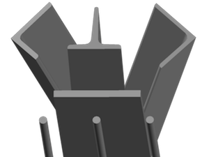
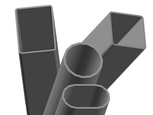
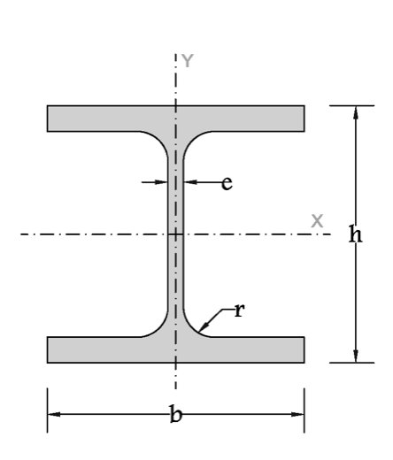
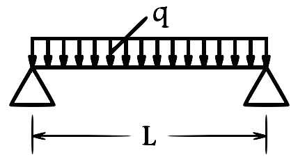
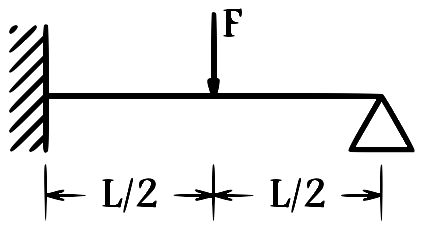
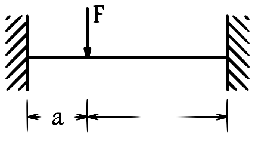
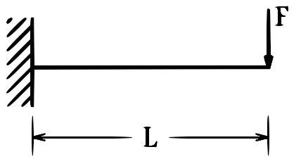

Perfiles
Prontuari de perfils d'acer a la butxaca: pesos, dimensions i termes de secció de perfils europeus i americans, i un dimensionador de bigues que et proposa el perfil adequat per a una càrrega i una llum donades.
Descarrega-la a l'App StoreCatàleg de perfils
Tria la regió (Europa o EUA) i navega per tres famílies:



- Estructurals — Europa: HEA, HEB, HEM, IPE, IPN, UPN. EUA: W, S, M, HP, C, MC.
- Comercials — angulars L i LD, T, pletines, rodons, quadrats i rectangulars massissos; als EUA també WT, MT i ST.
- Tubulars — tub rodó, quadrat, rectangular i oval; als EUA, HSS rodó i rectangular i PIPE.
Amb el cercador trobes un perfil escrivint-ne el nom (per exemple «HEB 2» et mostra HEB 200, HEB 220…).
Fitxa del perfil
Cada perfil té una fitxa amb el dibuix acotat i totes les dades agrupades:
- Pes per metre (calculat amb una densitat de 7.850 kg/m³).
- Dimensions: alçada, base, gruixos d'ànima i ala, radis…
- Termes de secció: àrea, moment estàtic, moments d'inèrcia, mòduls resistents, radis de gir i mòdul de torsió.
- Posició del centre de gravetat en perfils asimètrics (L, T, UPN…).
- Forats: distància entre eixos de forats i diàmetre màxim del forat a les ales.
Pots veure els valors en sistema mètric o imperial (polzades, lliures) i exportar la fitxa en PDF o imatge per compartir-la o arxivar-la.

La fitxa completa, tal com la mostra l'app:
| Dimensions | ||
|---|---|---|
| h | Altura | 200 mm |
| b | Base | 200 mm |
| e | Espessor ànima | 9 mm |
| e1 | Espessor ala | 15 mm |
| r | Radi de la curva interior | 18 mm |
| h1 | Alçada de la part plana de l'ànima | 134 mm |
| Pes i secció | ||
| P | Pes per metre | 61,3 kg/m |
| A | Àrea de la secció | 78,1 cm² |
| u | Perímetre de la secció | 1.150 mm |
| Termes de secció | ||
| Ix | Moment d'inèrcia de la secció respecte a l'eix X | 5.696 cm⁴ |
| Wx | Mòdul resistent de la secció respecte a l'eix X | 570 cm³ |
| Sx | Moment estàtic de mitja secció respecte a l'eix X | 321 cm³ |
| ix | Radi de gir de la secció respecte a l'eix X | 8,54 cm |
| Iy | Moment d'inèrcia de la secció respecte a l'eix Y | 2.003 cm⁴ |
| Wy | Mòdul resistent de la secció respecte a l'eix Y | 200 cm³ |
| iy | Radi de gir de la secció respecte a l'eix Y | 5,07 cm |
| It | Mòdul de torsió de la secció | 63,4 cm⁴ |
| Ia | Mòdul de curvatura de la secció | 171.100 cm⁶ |
| Forats | ||
| w | Distància entre eixos de forats | 110 mm |
| w1 | Distància eix forat a l'extrem | 45 mm |
| a | Diàmetre del forat | 25 mm |
Dimensionador de bigues
A la pestanya de càlcul, l'app busca el primer perfil de la sèrie triada que compleix tensió i fletxa. En tres passos:
- Tipus de perfil: HEB, IPE, IPN… o W, S, M, HP als EUA.
- Solicitació: recolzada–recolzada, encastada–recolzada, encastada–encastada o voladís.
- Càrregues: puntual centrada, puntual descentrada, repartida en tota la longitud o repartida en un tram (16 casos en total).




Al botó de característiques de càlcul configures el tipus d'acer (S235, S275, S355… o A36, A572, A992…), el coeficient de majoració de càrregues, la fletxa admissible (de L/250 a L/500 segons l'ús), si vols tenir en compte el pes propi i, en perfils americans, una amplada mínima de base.
El resultat mostra el perfil proposat, les reaccions i els moments als recolzaments, el moment màxim, la fletxa màxima i on es produeix, i el pes de la biga. Pots exportar-lo en PDF o imatge.
Dades introduïdes
| Solicitació | Recolzada–recolzada, càrrega repartida |
| Càrrega q | 1.000 kg/m |
| Longitud L | 5 m |
| Tipus d'acer | S275JR · 275 N/mm² = 2.804 kg/cm² |
| Coef. majoració | 1,50 |
| Fletxa màxima | L/400 = 1,25 cm |
| Pes propi | Sí |
Procés de càlcul Pro
- Moment de les càrregues: M = q·L²/8 = 3.125 kg·m; majorat ×1,50 = 4.687,5 kg·m.
- Predimensionat: Wx ≥ M / σadm = 468.750 / 2.804 = 167,2 cm³ ⇒ IPE 200 (Wx = 194 cm³).
- Tensions amb el pes propi: σ = 2.452 < 2.804 kg/cm² ✅ · tallant τ = 427 < 1.619 kg/cm² ✅
- Fletxa: IPE 200 → 2,04 cm ❌ · IPE 220 → 1,44 cm ❌ · IPE 240 → 1,03 cm ✅
Resultats
Aquí decideix la fletxa: per resistència n'hi hauria prou amb un IPE 200, però es deformaria massa.
Procés de càlcul i fórmules Pro
Pots veure el procés de càlcul pas a pas (predimensionat, comprovació de tensions i de fletxa) i consultar les fórmules de moments, reaccions i fletxes de cada solicitació, amb les unitats d'entrada i sortida, en mètric i imperial.
Gratuïta i compres
L'app és gratuïta, amb publicitat. El catàleg i les fitxes són complets sense comprar res, i el dimensionador inclou 20 càlculs de prova.
- Dimensionador de bigues il·limitat: càlculs sense límit, procés de càlcul, totes les fórmules i sense publicitat.
- Eliminar publicitat: treu els anuncis.
Pots restaurar compres anteriors des de l'app. Disponible en català, castellà, anglès, francès, alemany i italià; recorda els teus ajustos per regió (acer, coeficients, unitats i últims valors usats).
Perfiles
Un prontuario de perfiles de acero en el bolsillo: pesos, dimensiones y términos de sección de perfiles europeos y americanos, y un dimensionador de vigas que te propone el perfil adecuado para una carga y una luz dadas.
Descárgala en el App StoreCatálogo de perfiles
Elige la región (Europa o EE. UU.) y navega por tres familias:
- Estructurales — Europa: HEA, HEB, HEM, IPE, IPN, UPN. EE. UU.: W, S, M, HP, C, MC.
- Comerciales — angulares L y LD, T, pletinas, redondos, cuadrados y rectangulares macizos; en EE. UU. también WT, MT y ST.
- Tubulares — tubo redondo, cuadrado, rectangular y oval; en EE. UU., HSS redondo y rectangular y PIPE.
Con el buscador encuentras un perfil escribiendo su nombre (por ejemplo «HEB 2» muestra HEB 200, HEB 220…).
Ficha del perfil
Cada perfil tiene una ficha con el dibujo acotado y todos los datos agrupados:
- Peso por metro (calculado con una densidad de 7.850 kg/m³).
- Dimensiones: altura, base, espesores de alma y ala, radios…
- Términos de sección: área, momento estático, momentos de inercia, módulos resistentes, radios de giro y módulo de torsión.
- Posición del centro de gravedad en perfiles asimétricos (L, T, UPN…).
- Agujeros: distancia entre ejes de agujeros y diámetro máximo del agujero en las alas.
Puedes ver los valores en sistema métrico o imperial (pulgadas, libras) y exportar la ficha en PDF o imagen para compartirla o archivarla.
La ficha completa, tal como la muestra la app:
| Dimensiones | ||
|---|---|---|
| h | Altura | 200 mm |
| b | Base | 200 mm |
| e | Espesor alma | 9 mm |
| e1 | Espesor ala | 15 mm |
| r | Radio de la curva interior | 18 mm |
| h1 | Altura de la parte plana del alma | 134 mm |
| Peso y sección | ||
| P | Peso por metro | 61,3 kg/m |
| A | Área de la sección | 78,1 cm² |
| u | Perímetro de la sección | 1.150 mm |
| Términos de sección | ||
| Ix | Momento de inercia de la sección respecto al eje X | 5.696 cm⁴ |
| Wx | Módulo resistente de la sección respecto al eje X | 570 cm³ |
| Sx | Momento estático de media sección respecto al eje X | 321 cm³ |
| ix | Radio de giro de la sección respecto al eje X | 8,54 cm |
| Iy | Momento de inercia de la sección respecto al eje Y | 2.003 cm⁴ |
| Wy | Módulo resistente de la sección respecto al eje Y | 200 cm³ |
| iy | Radio de giro de la sección respecto al eje Y | 5,07 cm |
| It | Módulo de torsión de la sección | 63,4 cm⁴ |
| Ia | Módulo de curvatura de la sección | 171.100 cm⁶ |
| Agujeros | ||
| w | Distancia entre ejes de agujeros | 110 mm |
| w1 | Distancia eje agujero a extremo | 45 mm |
| a | Diámetro del agujero | 25 mm |
Dimensionador de vigas
En la pestaña de cálculo, la app busca el primer perfil de la serie elegida que cumple tensión y flecha. En tres pasos:
- Tipo de perfil: HEB, IPE, IPN… o W, S, M, HP en EE. UU.
- Solicitación: apoyada–apoyada, empotrada–apoyada, empotrada–empotrada o voladizo.
- Cargas: puntual centrada, puntual descentrada, repartida en toda la longitud o repartida en un tramo (16 casos en total).
En el botón de características de cálculo configuras el tipo de acero (S235, S275, S355… o A36, A572, A992…), el coeficiente de mayoración de cargas, la flecha admisible (de L/250 a L/500 según el uso), si quieres tener en cuenta el peso propio y, en perfiles americanos, una anchura mínima de base.
El resultado muestra el perfil propuesto, las reacciones y los momentos en los apoyos, el momento máximo, la flecha máxima y dónde se produce, y el peso de la viga. Puedes exportarlo en PDF o imagen.
Datos introducidos
| Solicitación | Apoyada–apoyada, carga repartida |
| Carga q | 1.000 kg/m |
| Longitud L | 5 m |
| Tipo de acero | S275JR · 275 N/mm² = 2.804 kg/cm² |
| Coef. mayoración | 1,50 |
| Flecha máxima | L/400 = 1,25 cm |
| Peso propio | Sí |
Proceso de cálculo Pro
- Momento de las cargas: M = q·L²/8 = 3.125 kg·m; mayorado ×1,50 = 4.687,5 kg·m.
- Predimensionado: Wx ≥ M / σadm = 468.750 / 2.804 = 167,2 cm³ ⇒ IPE 200 (Wx = 194 cm³).
- Tensiones con el peso propio: σ = 2.452 < 2.804 kg/cm² ✅ · cortante τ = 427 < 1.619 kg/cm² ✅
- Flecha: IPE 200 → 2,04 cm ❌ · IPE 220 → 1,44 cm ❌ · IPE 240 → 1,03 cm ✅
Resultados
Aquí decide la flecha: por resistencia bastaría un IPE 200, pero se deformaría demasiado.
Proceso de cálculo y fórmulas Pro
Puedes ver el proceso de cálculo paso a paso (predimensionado, comprobación de tensiones y de flecha) y consultar las fórmulas de momentos, reacciones y flechas de cada solicitación, con las unidades de entrada y salida, en métrico e imperial.
Gratis y compras
La app es gratuita, con publicidad. El catálogo y las fichas son completos sin comprar nada, y el dimensionador incluye 20 cálculos de prueba.
- Dimensionador de vigas ilimitado: cálculos sin límite, proceso de cálculo, todas las fórmulas y sin publicidad.
- Eliminar publicidad: quita los anuncios.
Puedes restaurar compras anteriores desde la app. Disponible en catalán, castellano, inglés, francés, alemán e italiano; recuerda tus ajustes por región (acero, coeficientes, unidades y últimos valores usados).
Perfiles
A steel section handbook in your pocket: weights, dimensions and section properties of European and American profiles, plus a beam sizer that suggests the right section for a given load and span.
Download on the App StoreSection catalogue
Choose a region (Europe or USA) and browse three families:
- Structural — Europe: HEA, HEB, HEM, IPE, IPN, UPN. USA: W, S, M, HP, C, MC.
- Merchant bars — L and double-L angles, T, flat bars, solid round, square and rectangular bars; in the USA also WT, MT and ST.
- Hollow sections — round, square, rectangular and oval tubes; in the USA, round and rectangular HSS and PIPE.
Use search to find a section by name (for example “HEB 2” shows HEB 200, HEB 220…).
Section sheet
Each section has a sheet with a dimensioned drawing and all its data grouped:
- Weight per metre (based on a steel density of 7,850 kg/m³).
- Dimensions: depth, width, web and flange thickness, radii…
- Section properties: area, first moment of area, moments of inertia, section moduli, radii of gyration and torsion constant.
- Centroid position for asymmetric sections (L, T, UPN…).
- Holes: gauge between hole centres and maximum hole diameter in the flanges.
View values in metric or imperial units (inches, pounds) and export the sheet as a PDF or image to share or file it.
The full sheet, as the app shows it:
| Dimensions | ||
|---|---|---|
| h | Height | 200 mm |
| b | Width of flange | 200 mm |
| e | Thickness of web | 9 mm |
| e1 | Thickness of flange | 15 mm |
| r | Root radius | 18 mm |
| h1 | Depth of flat web | 134 mm |
| Weight and section | ||
| P | Weight per metre | 61.3 kg/m |
| A | Area of section | 78.1 cm² |
| u | Perimeter of section | 1,150 mm |
| Section properties | ||
| Ix | Moment of inertia of the section about the X axis | 5,696 cm⁴ |
| Wx | Section modulus about the X axis | 570 cm³ |
| Sx | First moment of area of half section about the X axis | 321 cm³ |
| ix | Radius of gyration of the section about the X axis | 8.54 cm |
| Iy | Moment of inertia of the section about the Y axis | 2,003 cm⁴ |
| Wy | Section modulus about the Y axis | 200 cm³ |
| iy | Radius of gyration of the section about the Y axis | 5.07 cm |
| It | Torsion constant of the section | 63.4 cm⁴ |
| Ia | Warping constant of the section | 171,100 cm⁶ |
| Holes | ||
| w | Distance between hole axes | 110 mm |
| w1 | Distance from hole axis to the edge | 45 mm |
| a | Hole diameter | 25 mm |
Beam sizer
In the calculation tab, the app finds the first section in the chosen series that meets both stress and deflection limits. Three steps:
- Section type: HEB, IPE, IPN… or W, S, M, HP in the USA.
- Support conditions: pinned–pinned, fixed–pinned, fixed–fixed or cantilever.
- Loads: central point load, off-centre point load, full-length distributed load or partial distributed load (16 cases in total).
The settings button lets you set the steel grade (S235, S275, S355… or A36, A572, A992…), the load factor, the allowable deflection (L/250 to L/500 depending on use), whether to include self-weight and, for American sections, a minimum width.
The result shows the suggested section, the reactions and moments at the supports, the maximum moment, the maximum deflection and where it occurs, and the beam weight. You can export it as a PDF or image.
Input data
| Supports and load | Pinned–pinned, distributed load |
| Load q | 1,000 kg/m |
| Length L | 5 m |
| Steel grade | S275JR · 275 N/mm² = 2,804 kg/cm² |
| Load factor | 1.50 |
| Maximum deflection | L/400 = 1.25 cm |
| Self-weight | Yes |
Calculation process Pro
- Moment from loads: M = q·L²/8 = 3,125 kg·m; factored ×1.50 = 4,687.5 kg·m.
- Pre-sizing: Wx ≥ M / σadm = 468,750 / 2,804 = 167.2 cm³ ⇒ IPE 200 (Wx = 194 cm³).
- Stresses including self-weight: σ = 2,452 < 2,804 kg/cm² ✅ · shear τ = 427 < 1,619 kg/cm² ✅
- Deflection: IPE 200 → 2.04 cm ❌ · IPE 220 → 1.44 cm ❌ · IPE 240 → 1.03 cm ✅
Results
Deflection governs here: an IPE 200 would be strong enough, but it would deflect too much.
Calculation process and formulas Pro
See the step-by-step calculation (pre-sizing, stress check and deflection check) and browse the formulas for moments, reactions and deflections in every load case, with input and output units, in metric and imperial.
Free and purchases
The app is free, with ads. The catalogue and section sheets are complete without buying anything, and the beam sizer includes 20 trial calculations.
- Unlimited beam sizer: unlimited calculations, calculation process, all formulas and no ads.
- Remove ads: removes advertising.
You can restore previous purchases from within the app. Available in Catalan, Spanish, English, French, German and Italian; it remembers your settings per region (steel, factors, units and last values used).
Perfiles
Un catalogue de profilés en acier dans votre poche : poids, dimensions et caractéristiques de section des profilés européens et américains, et un dimensionneur de poutres qui propose le profilé adapté à une charge et une portée données.
Télécharger sur l'App StoreCatalogue de profilés
Choisissez la région (Europe ou États-Unis) et parcourez trois familles :
- Structurels — Europe : HEA, HEB, HEM, IPE, IPN, UPN. États-Unis : W, S, M, HP, C, MC.
- Marchands — cornières L et LD, T, plats, ronds, carrés et rectangulaires pleins ; aux États-Unis aussi WT, MT et ST.
- Tubes — ronds, carrés, rectangulaires et ovales ; aux États-Unis, HSS rond et rectangulaire et PIPE.
La recherche trouve un profilé par son nom (par exemple « HEB 2 » affiche HEB 200, HEB 220…).
Fiche du profilé
Chaque profilé dispose d'une fiche avec un dessin coté et toutes ses données regroupées :
- Poids au mètre (calculé avec une masse volumique de 7 850 kg/m³).
- Dimensions : hauteur, largeur, épaisseurs d'âme et d'aile, rayons…
- Caractéristiques de section : aire, moment statique, moments d'inertie, modules de résistance, rayons de giration et module de torsion.
- Position du centre de gravité des profilés asymétriques (L, T, UPN…).
- Perçages : entraxe des trous et diamètre maximal de trou dans les ailes.
Affichez les valeurs en métrique ou en impérial (pouces, livres) et exportez la fiche en PDF ou en image pour la partager ou l'archiver.
La fiche complète, telle que l'app l'affiche :
| Dimensions | ||
|---|---|---|
| h | Hauteur | 200 mm |
| b | Base | 200 mm |
| e | Épaisseur d'âme | 9 mm |
| e1 | Épaisseur d'aile | 15 mm |
| r | Rayon de la courbe intérieure | 18 mm |
| h1 | Hauteur de la partie plate de l'âme | 134 mm |
| Poids et section | ||
| P | Poids au mètre | 61,3 kg/m |
| A | Aire de la section | 78,1 cm² |
| u | Périmètre de la section | 1 150 mm |
| Caractéristiques de section | ||
| Ix | Moment d'inertie de la section par rapport à l'axe X | 5 696 cm⁴ |
| Wx | Module résistant de la section par rapport à l'axe X | 570 cm³ |
| Sx | Moment statique de la demi-section par rapport à l'axe X | 321 cm³ |
| ix | Rayon de giration de la section par rapport à l'axe X | 8,54 cm |
| Iy | Moment d'inertie de la section par rapport à l'axe Y | 2 003 cm⁴ |
| Wy | Module résistant de la section par rapport à l'axe Y | 200 cm³ |
| iy | Rayon de giration de la section par rapport à l'axe Y | 5,07 cm |
| It | Module de torsion de la section | 63,4 cm⁴ |
| Ia | Module de courbure de la section | 171 100 cm⁶ |
| Perçages | ||
| w | Distance entre axes de trous | 110 mm |
| w1 | Distance axe trou à l'extrême | 45 mm |
| a | Diamètre du trou | 25 mm |
Dimensionneur de poutres
Dans l'onglet de calcul, l'app cherche le premier profilé de la série choisie qui vérifie la contrainte et la flèche. En trois étapes :
- Type de profilé : HEB, IPE, IPN… ou W, S, M, HP aux États-Unis.
- Appuis : appui–appui, encastrement–appui, encastrement–encastrement ou console.
- Charges : ponctuelle centrée, ponctuelle excentrée, répartie sur toute la longueur ou répartie sur un tronçon (16 cas au total).
Le bouton des paramètres de calcul permet de régler la nuance d'acier (S235, S275, S355… ou A36, A572, A992…), le coefficient de majoration des charges, la flèche admissible (de L/250 à L/500 selon l'usage), la prise en compte du poids propre et, pour les profilés américains, une largeur minimale.
Le résultat affiche le profilé proposé, les réactions et moments aux appuis, le moment maximal, la flèche maximale et sa position, ainsi que le poids de la poutre. Vous pouvez l'exporter en PDF ou en image.
Données saisies
| Appuis et charge | Appui–appui, charge répartie |
| Charge q | 1 000 kg/m |
| Longueur L | 5 m |
| Nuance d'acier | S275JR · 275 N/mm² = 2 804 kg/cm² |
| Coef. de majoration | 1,50 |
| Flèche maximale | L/400 = 1,25 cm |
| Poids propre | Oui |
Détail du calcul Pro
- Moment des charges : M = q·L²/8 = 3 125 kg·m ; majoré ×1,50 = 4 687,5 kg·m.
- Prédimensionnement : Wx ≥ M / σadm = 468 750 / 2 804 = 167,2 cm³ ⇒ IPE 200 (Wx = 194 cm³).
- Contraintes avec le poids propre : σ = 2 452 < 2 804 kg/cm² ✅ · cisaillement τ = 427 < 1 619 kg/cm² ✅
- Flèche : IPE 200 → 2,04 cm ❌ · IPE 220 → 1,44 cm ❌ · IPE 240 → 1,03 cm ✅
Résultats
Ici, c'est la flèche qui décide : un IPE 200 résisterait, mais il se déformerait trop.
Détail du calcul et formules Pro
Consultez le calcul pas à pas (prédimensionnement, vérification des contraintes et de la flèche) et les formules des moments, réactions et flèches pour chaque cas de charge, avec les unités d'entrée et de sortie, en métrique et en impérial.
Gratuite et achats
L'app est gratuite, avec publicité. Le catalogue et les fiches sont complets sans rien acheter, et le dimensionneur inclut 20 calculs d'essai.
- Dimensionneur de poutres illimité : calculs illimités, détail du calcul, toutes les formules et sans publicité.
- Supprimer la publicité : retire les annonces.
Vous pouvez restaurer vos achats depuis l'app. Disponible en catalan, espagnol, anglais, français, allemand et italien ; elle mémorise vos réglages par région (acier, coefficients, unités et dernières valeurs utilisées).
Perfiles
Eine Stahlbau-Profiltabelle für die Hosentasche: Gewichte, Abmessungen und Querschnittswerte europäischer und amerikanischer Profile sowie eine Trägerbemessung, die das passende Profil für eine gegebene Last und Spannweite vorschlägt.
Im App Store ladenProfilkatalog
Wählen Sie die Region (Europa oder USA) und blättern Sie durch drei Gruppen:
- Baustahlprofile — Europa: HEA, HEB, HEM, IPE, IPN, UPN. USA: W, S, M, HP, C, MC.
- Stabstahl — Winkel L und LD, T, Flachstahl, Rund-, Vierkant- und Rechteckvollstahl; in den USA auch WT, MT und ST.
- Hohlprofile — Rund-, Quadrat-, Rechteck- und Ovalrohre; in den USA runde und rechteckige HSS sowie PIPE.
Mit der Suche finden Sie ein Profil über seinen Namen (z. B. zeigt „HEB 2“ HEB 200, HEB 220 …).
Profilblatt
Jedes Profil hat ein Datenblatt mit bemaßter Zeichnung und allen Werten in Gruppen:
- Gewicht pro Meter (berechnet mit einer Dichte von 7.850 kg/m³).
- Abmessungen: Höhe, Breite, Steg- und Flanschdicke, Radien …
- Querschnittswerte: Fläche, statisches Moment, Trägheitsmomente, Widerstandsmomente, Trägheitsradien und Torsionsträgheitsmoment.
- Schwerpunktlage bei unsymmetrischen Profilen (L, T, UPN …).
- Lochbilder: Abstand der Lochachsen und maximaler Lochdurchmesser in den Flanschen.
Werte lassen sich metrisch oder imperial (Zoll, Pfund) anzeigen, und das Blatt lässt sich als PDF oder Bild exportieren.
Das vollständige Profilblatt, wie es die App zeigt:
| Abmessungen | ||
|---|---|---|
| h | Nennhöhe | 200 mm |
| b | Flanschbreite | 200 mm |
| e | Stegdicke | 9 mm |
| e1 | Flanschdicke | 15 mm |
| r | Ausrundungsradius | 18 mm |
| h1 | Höhe des geraden Stegteils | 134 mm |
| Gewicht und Querschnitt | ||
| P | Gewicht pro Meter | 61,3 kg/m |
| A | Schnittsfläche | 78,1 cm² |
| u | Querschnittsumfang | 1.150 mm |
| Querschnittswerte | ||
| Ix | Trägheitsmoment des Querschnittes zur X-Achse | 5.696 cm⁴ |
| Wx | Widerstandsmoment zur X-Achse | 570 cm³ |
| Sx | Flächenmoment 1. Grades des halben Querschnitts zur x-Achse | 321 cm³ |
| ix | Trägheitsradius des Querschnittes zur X-Achse | 8,54 cm |
| Iy | Trägheitsmoment des Querschnittes zur Y-Achse | 2.003 cm⁴ |
| Wy | Widerstandsmoment zur Y-Achse | 200 cm³ |
| iy | Trägheitsradius des Querschnittes zur Y-Achse | 5,07 cm |
| It | Torsionsträgheitsmoment des Querschnitts | 63,4 cm⁴ |
| Ia | Wölbwiderstand des Querschnitts | 171.100 cm⁶ |
| Lochbilder | ||
| w | Achsenabstand Löcher | 110 mm |
| w1 | Achsenabstand zwischen Loch und Rand | 45 mm |
| a | Lochdurchmesser | 25 mm |
Trägerbemessung
Im Berechnungs-Tab sucht die App das erste Profil der gewählten Reihe, das Spannungs- und Durchbiegungsnachweis erfüllt. In drei Schritten:
- Profiltyp: HEB, IPE, IPN … oder W, S, M, HP in den USA.
- Lagerung: gelenkig–gelenkig, eingespannt–gelenkig, eingespannt–eingespannt oder Kragarm.
- Lasten: mittige Einzellast, außermittige Einzellast, Streckenlast über die ganze Länge oder über einen Teilbereich (insgesamt 16 Fälle).
Über die Berechnungseinstellungen legen Sie Stahlsorte (S235, S275, S355 … oder A36, A572, A992 …), Lastfaktor, zulässige Durchbiegung (L/250 bis L/500 je nach Nutzung), die Berücksichtigung des Eigengewichts und bei US-Profilen eine Mindestbreite fest.
Das Ergebnis zeigt das vorgeschlagene Profil, Auflagerkräfte und Momente an den Auflagern, das maximale Moment, die maximale Durchbiegung und ihre Lage sowie das Trägergewicht. Export als PDF oder Bild möglich.
Eingaben
| Lagerung und Last | Gelenkig–gelenkig, Streckenlast |
| Last q | 1.000 kg/m |
| Länge L | 5 m |
| Stahlsorte | S275JR · 275 N/mm² = 2.804 kg/cm² |
| Lastfaktor | 1,50 |
| Max. Durchbiegung | L/400 = 1,25 cm |
| Eigengewicht | Ja |
Rechenweg Pro
- Moment aus Lasten: M = q·L²/8 = 3.125 kg·m; mit Faktor ×1,50 = 4.687,5 kg·m.
- Vorbemessung: Wx ≥ M / σzul = 468.750 / 2.804 = 167,2 cm³ ⇒ IPE 200 (Wx = 194 cm³).
- Spannungen mit Eigengewicht: σ = 2.452 < 2.804 kg/cm² ✅ · Schub τ = 427 < 1.619 kg/cm² ✅
- Durchbiegung: IPE 200 → 2,04 cm ❌ · IPE 220 → 1,44 cm ❌ · IPE 240 → 1,03 cm ✅
Ergebnisse
Maßgebend ist hier die Durchbiegung: Ein IPE 200 wäre tragfähig genug, würde sich aber zu stark durchbiegen.
Rechenweg und Formeln Pro
Sehen Sie den Rechenweg Schritt für Schritt (Vorbemessung, Spannungs- und Durchbiegungsnachweis) und schlagen Sie die Formeln für Momente, Auflagerkräfte und Durchbiegungen aller Lastfälle nach – mit Ein- und Ausgabeeinheiten, metrisch und imperial.
Kostenlos und Käufe
Die App ist kostenlos und werbefinanziert. Katalog und Profilblätter sind ohne Kauf vollständig; die Trägerbemessung enthält 20 Testberechnungen.
- Unbegrenzte Trägerbemessung: unbegrenzte Berechnungen, Rechenweg, alle Formeln und keine Werbung.
- Werbung entfernen: blendet die Anzeigen aus.
Frühere Käufe lassen sich in der App wiederherstellen. Verfügbar auf Katalanisch, Spanisch, Englisch, Französisch, Deutsch und Italienisch; Ihre Einstellungen werden je Region gespeichert (Stahl, Faktoren, Einheiten und zuletzt verwendete Werte).
Perfiles
Un prontuario di profilati in acciaio in tasca: pesi, dimensioni e caratteristiche di sezione di profilati europei e americani, e un dimensionatore di travi che ti propone il profilo adatto a un carico e una luce dati.
Scaricala dall'App StoreCatalogo dei profilati
Scegli la regione (Europa o USA) e sfoglia tre famiglie:
- Strutturali — Europa: HEA, HEB, HEM, IPE, IPN, UPN. USA: W, S, M, HP, C, MC.
- Commerciali — angolari L e LD, T, piatti, tondi, quadri e rettangolari pieni; negli USA anche WT, MT e ST.
- Tubolari — tubi tondi, quadrati, rettangolari e ovali; negli USA, HSS tondo e rettangolare e PIPE.
Con la ricerca trovi un profilo scrivendone il nome (ad esempio «HEB 2» mostra HEB 200, HEB 220…).
Scheda del profilo
Ogni profilo ha una scheda con il disegno quotato e tutti i dati raggruppati:
- Peso al metro (calcolato con una densità di 7.850 kg/m³).
- Dimensioni: altezza, base, spessori di anima e ala, raggi…
- Caratteristiche di sezione: area, momento statico, momenti d'inerzia, moduli di resistenza, raggi d'inerzia e modulo di torsione.
- Posizione del baricentro nei profili asimmetrici (L, T, UPN…).
- Fori: interasse dei fori e diametro massimo del foro nelle ali.
Puoi vedere i valori in sistema metrico o imperiale (pollici, libbre) ed esportare la scheda in PDF o immagine per condividerla o archiviarla.
La scheda completa, come la mostra l'app:
| Dimensioni | ||
|---|---|---|
| h | Altezza | 200 mm |
| b | Base | 200 mm |
| e | Spessore anima | 9 mm |
| e1 | Spessore ala | 15 mm |
| r | Raggio della curva interna | 18 mm |
| h1 | Altezza della parte piana dell'anima | 134 mm |
| Peso e sezione | ||
| P | Peso al metro | 61,3 kg/m |
| A | Area della sezione | 78,1 cm² |
| u | Perimetro della sezione | 1.150 mm |
| Caratteristiche di sezione | ||
| Ix | Momento d'inerzia della sezione rispetto all'asse X | 5.696 cm⁴ |
| Wx | Modulo resistente della sezione rispetto all'asse X | 570 cm³ |
| Sx | Momento statico di mezza sezione rispetto all'asse X | 321 cm³ |
| ix | Raggio d'inerzia della sezione rispetto all'asse X | 8,54 cm |
| Iy | Momento d'inerzia della sezione rispetto all'asse Y | 2.003 cm⁴ |
| Wy | Modulo resistente della sezione rispetto all'asse Y | 200 cm³ |
| iy | Raggio d'inerzia della sezione rispetto all'asse Y | 5,07 cm |
| It | Modulo di torsione della sezione | 63,4 cm⁴ |
| Ia | Modulo di curvatura della sezione | 171.100 cm⁶ |
| Fori | ||
| w | Distanza tra gli assi dei fori | 110 mm |
| w1 | Distanza dall'asse del foro all'estremità | 45 mm |
| a | Diametro del foro | 25 mm |
Dimensionatore di travi
Nella scheda di calcolo, l'app cerca il primo profilo della serie scelta che verifica tensione e freccia. In tre passi:
- Tipo di profilo: HEB, IPE, IPN… oppure W, S, M, HP negli USA.
- Vincoli: appoggio–appoggio, incastro–appoggio, incastro–incastro o mensola.
- Carichi: concentrato centrato, concentrato eccentrico, distribuito su tutta la lunghezza o distribuito su un tratto (16 casi in totale).
Con il pulsante delle impostazioni di calcolo scegli il tipo di acciaio (S235, S275, S355… o A36, A572, A992…), il coefficiente di amplificazione dei carichi, la freccia ammissibile (da L/250 a L/500 secondo l'uso), se considerare il peso proprio e, nei profili americani, una larghezza minima.
Il risultato mostra il profilo proposto, le reazioni e i momenti agli appoggi, il momento massimo, la freccia massima e dove si verifica, e il peso della trave. Puoi esportarlo in PDF o immagine.
Dati inseriti
| Vincoli e carico | Appoggio–appoggio, carico distribuito |
| Carico q | 1.000 kg/m |
| Lunghezza L | 5 m |
| Tipo di acciaio | S275JR · 275 N/mm² = 2.804 kg/cm² |
| Coeff. di amplificazione | 1,50 |
| Freccia massima | L/400 = 1,25 cm |
| Peso proprio | Sì |
Procedimento di calcolo Pro
- Momento dei carichi: M = q·L²/8 = 3.125 kg·m; amplificato ×1,50 = 4.687,5 kg·m.
- Predimensionamento: Wx ≥ M / σamm = 468.750 / 2.804 = 167,2 cm³ ⇒ IPE 200 (Wx = 194 cm³).
- Tensioni con il peso proprio: σ = 2.452 < 2.804 kg/cm² ✅ · taglio τ = 427 < 1.619 kg/cm² ✅
- Freccia: IPE 200 → 2,04 cm ❌ · IPE 220 → 1,44 cm ❌ · IPE 240 → 1,03 cm ✅
Risultati
Qui decide la freccia: per resistenza basterebbe un IPE 200, ma si deformerebbe troppo.
Procedimento di calcolo e formule Pro
Puoi vedere il calcolo passo per passo (predimensionamento, verifica delle tensioni e della freccia) e consultare le formule di momenti, reazioni e frecce per ogni caso di carico, con le unità di ingresso e di uscita, in metrico e imperiale.
Gratuita e acquisti
L'app è gratuita, con pubblicità. Il catalogo e le schede sono completi senza acquistare nulla, e il dimensionatore include 20 calcoli di prova.
- Dimensionatore di travi illimitato: calcoli illimitati, procedimento di calcolo, tutte le formule e senza pubblicità.
- Rimuovi pubblicità: elimina gli annunci.
Puoi ripristinare gli acquisti precedenti dall'app. Disponibile in catalano, spagnolo, inglese, francese, tedesco e italiano; ricorda le tue impostazioni per regione (acciaio, coefficienti, unità e ultimi valori usati).